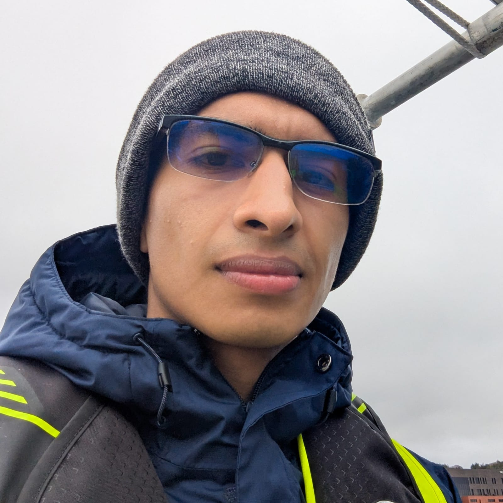

Gabriel Santiago Gutierrez Cardenas
NF-POGO CofE Scholar
Gabriel Santiago Gutiérrez-Cárdenas has been a NF-POGO Centre of Excelence in Observational Oceanography’s scholar since October 2025, having earned a Master on Science at CICIMAR-IPN, México, receiving the best postgraduate thesis of 2024 award by their research in the diversity of El Niño-Southern Oscillation and their impacts on upwelling centers in the southern region of the California Current.
Additionally, he earned a bachelor’s degree in marine biology from the Universidad de Bogotá Jorge Tadeo Lozano (UJTL) (2017-2022).
During 2025, he conducted two courses, the first from Data Analysis and Data Visualization, and the second from Basics Statistics at bachelor’s level in the UJTL as well as research and co-supervision of research thesis.
He has published research papers focusing on the analysis of climate teleconnections and how ENSO affects hydroclimatology and coastal systems in different regions of the world. He has participated in national and international scientific events as a speaker and is interested in understanding how teleconnections, ocean-atmosphere processes, marine heat waves, and upwelling processes interact with each other and affect the biological and ecological characteristics of oceanic and coastal ecosystems.
Hi current project is on Marine Heat Waves on the Newfoundland and Labrador shelf.
|
|

Gabriel Santiago Gutierrez Cardenas
|